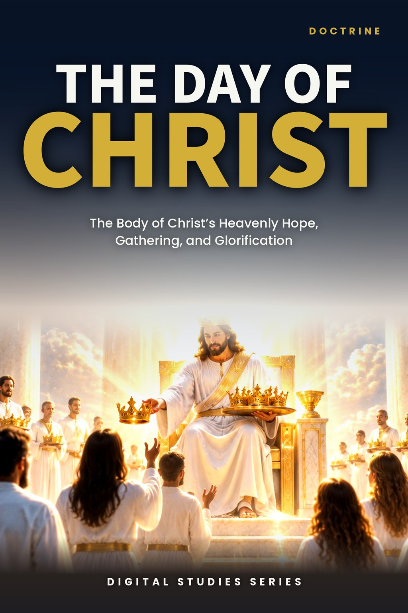
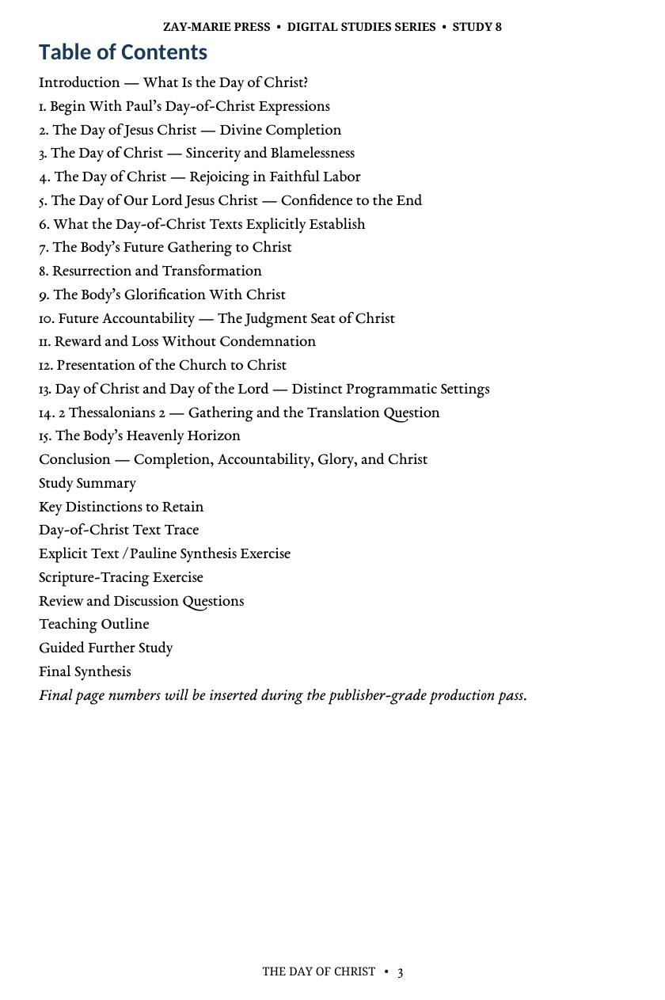
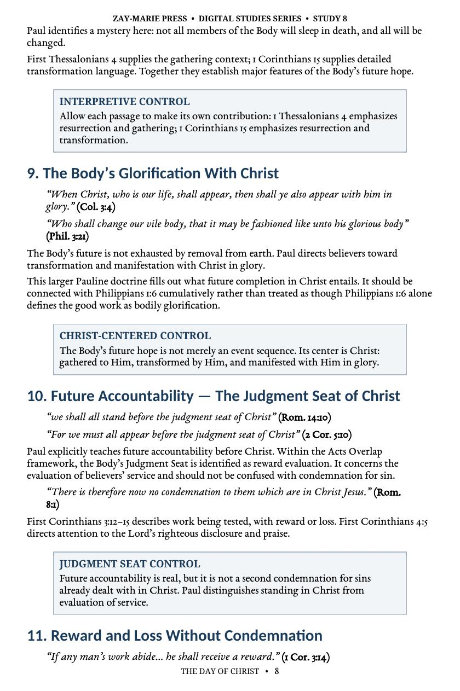
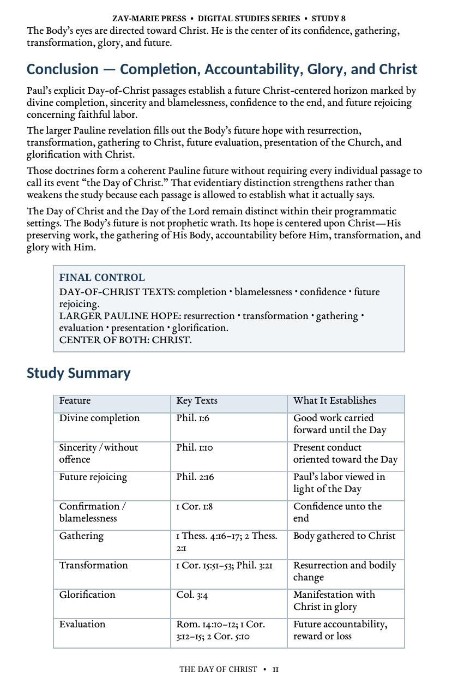
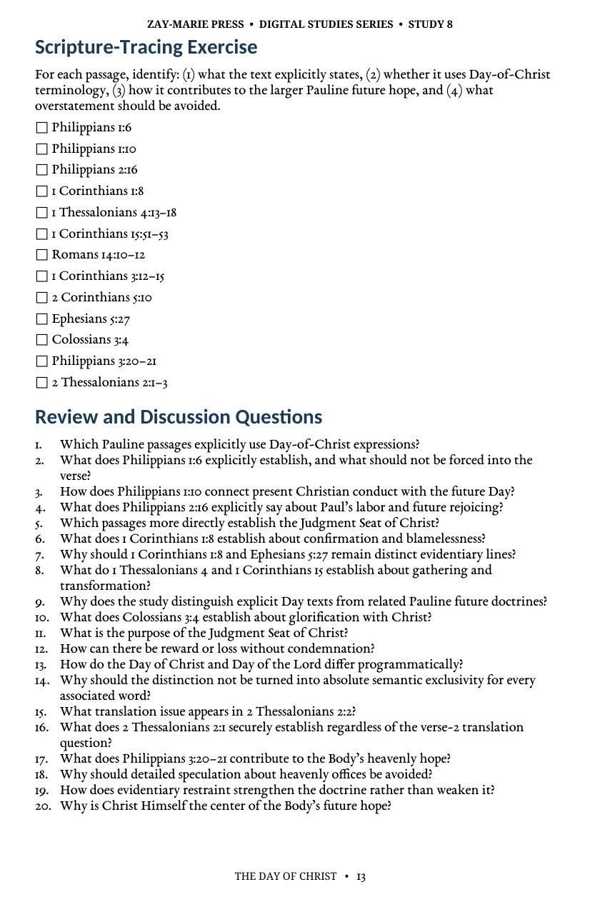

The Day of Christ
The Body of Christ’s Heavenly Hope, Gathering, and Glorification
A Biblical Examination of Completion, Gathering, Transformation, Evaluation, Reward, Presentation, and Glorification
The Day of Christ reveals the Body of Christ’s true future hope—divine completion, our gathering to Christ, resurrection and transformation, accountability, reward, presentation, and glorification.
This study begins with Paul’s own Day-of-Christ language and then clearly distinguishes it from Israel’s prophetic Day of the Lord, without relying on speculation or forced chronology.
What Is the Day of Christ?
The Day of Christ belongs exclusively to the Body’s heavenly hope and is defined first by Paul’s own language. Through Paul’s writings, the Day of Christ unfolds as our gathering to Him, resurrection and transformation, glorification, evaluation at the Judgment Seat, reward, and presentation to Christ. The Judgment Seat addresses service and reward—not sin or condemnation.
Let Paul’s Language Define the Hope
Begin With Paul’s Own Expressions
Let the Day-of-Christ texts establish their own emphasis before related passages are brought alongside them.
Completion, Sincerity, and Rejoicing
Examine divine completion, blamelessness, and Paul’s joy in faithful labor.
Gathering, Resurrection, and Transformation
Study the Body’s future gathering to Christ and its promised change into incorruptibility.
Glorification and Presentation
See how the Body’s future is brought to its completed, presented, and glorified end in Christ.
Judgment Seat: Reward Without Condemnation
Distinguish service, reward, and loss from any question of sin or condemnation.
Day of Christ and Day of the Lord
Keep their distinct programmatic settings clear and approach 2 Thessalonians 2 with textual restraint.
Examine the Passages for Yourself
Philippians 1:6
Assures that the good work God began will be completed in the Day of Jesus Christ.
Philippians 1:10
Connects sincerity and blamelessness with the Day of Christ.
Philippians 2:16
Places faithful labor and rejoicing in the light of the Day of Christ.
1 Corinthians 1:8
Speaks of confirmation unto the end in the Day of our Lord Jesus Christ.
1 Thessalonians 4:13–18
Establishes the Body’s gathering to Christ and its abiding relationship with Him.
1 Corinthians 15:51–52
Declares the resurrection and transformation of the Body.
2 Corinthians 5:10
Sets the Judgment Seat before believers as an evaluation of what has been done.
Colossians 3:4; Ephesians 5:27
Looks ahead to the Body’s appearance with Christ in glory and presentation to Him.
The Body’s Heavenly Hope in Christ
“The Day of Christ belongs to the Body’s heavenly hope: completion, gathering, accountability, reward, and glorification in Christ.”
The Day of Christ is defined by Paul’s language and future-facing promises for the Body. It is therefore not interchangeable with Israel’s prophetic Day of the Lord, even where related passages must be handled with care.
Preview the Study Before You Purchase
Click any page to enlarge it for reading.
{kind=link}

Study Outline
Begin with Paul’s Day-of-Christ expressions and the study’s governing distinctions.
{kind=link}

Gathering and Transformation
Examine the Body’s gathering to Christ, resurrection, and transformation.
{kind=link}

Accountability, Reward, and Presentation
See how the Judgment Seat, reward, and presentation are set within the Body’s future hope.
{kind=link}

Scripture-Tracing Exercise and Review
Work through the passages directly, then test the study’s central distinctions with review questions.
A Focused Study Built for
Understanding and Teaching
15-Page In-Depth Biblical Study
A careful study of the Body’s future hope in the Day of Christ.
15 Core Teaching Sections
Progress through the Day texts, gathering, transformation, evaluation, and glorification.
Day-of-Christ Passage Study
Examine Paul’s own expressions before bringing related passages alongside them.
Gathering and Transformation Trace
Work through the passages that establish the Body’s gathering and future change.
20 Review Questions
Test the study’s distinctions concerning the Day, judgment, reward, and hope.
Teaching Outline
A ready framework for teaching the Body’s heavenly hope with precision.
Guided Further Study
Return directly to the passages on completion, gathering, evaluation, and glory.
Final Synthesis Exercise
Bring the Day-of-Christ evidence together in a concise, Scripture-based explanation.
The Day of Christ
15-page digital PDF · For personal use